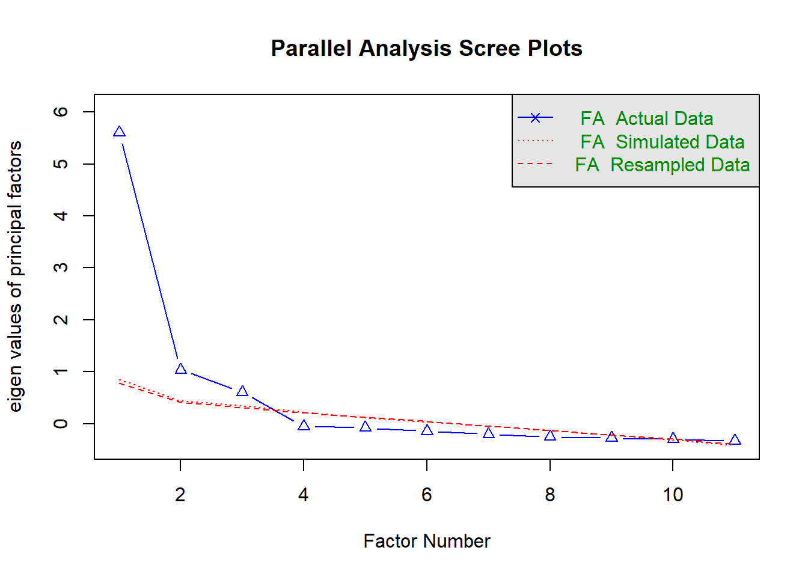

Bölüm 7 AFA
-
Bazı durumlarda, özellikle de ölçme araçları yeni geliştirildiyse:
Araştırmacıların bir grup gözlenen/ölçülen değişkenin altında yatan faktör sayısı hakkında güçlü varsayımları yoktur.
Araştırmacıların hangi grup değişkenlerin birbirleriyle diğerlerine göre daha çok korelasyona sahip olduğu hakkında güçlü varsayımları yoktur.
Bazen araştırmacılar belli değişkenlerin kuramsal yapıların iyi göstergeleri olup olmadığı hakkında fikir sahibi olmayabilir.
-
Bu koşullarda AFA gözlenen/ölçülen değişkenler arasındaki altta yatan yapının incelenmesi için önemli bir araçtır. AFA’nın başlıca amaçları aşağıdaki gibidir:
Gözlenen/ölçülen değişkenler arasındaki korelasyonların örüntüsünü özetlemek.
Çok sayıdaki gözlenen/ölçülen değişkeni daha az sayıdaki faktöre indirgemek.
Gözlenen/ölçülen değişkenleri kullanarak altta yatan yapının operasyonel tanımını sağlamak.
-
Varsayımsal bir veri olan Heuristic adlı veride 6 ölçülen değişken bulunmaktadır. Ancak bu ölçülen değişkenlerin altında yatan yapı hakkında bir fikir yoktur. Veri Thompson’ın (2004) kitabında sayfa 10’da verilmiş olup 6 ölçülen değişkene ilişkin 7 öğrenci tarafından sağlanan derecelendirmeleri içermektedir
- Bir faktör analizi yapıldığında, ölçülen değişkenler arasındaki ilişkiler araştırılır ve bu ilişkilerin daha az sayıda gizil yapıda özetlenip özetlenemeyeceği belirlenmeye çalışılır. Değişkenler arasındaki ilişkileri özetlemek için birkaç farklı istatistik kullanılabilir (örneğin, Pearson momentler-çarpımı korelasyon katsayıları, Spearman'ın rho katsayıları, tetrakorik korelasyon katsayısı).
df <- data.frame(matrix(c(
1,6,5,4,8,6,2,
2,8,7,2,7,5,3,
3,9,8,1,9,7,1,
4,5,4,5,9,7,1,
5,4,3,6,9,7,1,
6,7,6,3,7,5,3,
7,3,2,7,7,5,3),nrow=7,byrow = TRUE))
colnames(df) <- c("id", "handsome", "beatiful","ugly","brillant","smart","dumb")| id | handsome | beatiful | ugly | brillant | smart | dumb |
|---|---|---|---|---|---|---|
| 1 | 6 | 5 | 4 | 8 | 6 | 2 |
| 2 | 8 | 7 | 2 | 7 | 5 | 3 |
| 3 | 9 | 8 | 1 | 9 | 7 | 1 |
| 4 | 5 | 4 | 5 | 9 | 7 | 1 |
| 5 | 4 | 3 | 6 | 9 | 7 | 1 |
| 6 | 7 | 6 | 3 | 7 | 5 | 3 |
| 7 | 3 | 2 | 7 | 7 | 5 | 3 |
- Verideki 6 değişken arasındaki Pearson korelasyon katsayıları matrisi aşağıdaki gibidir:
| handsome | beatiful | ugly | brillant | smart | dumb | |
|---|---|---|---|---|---|---|
| handsome | 1 | 1 | -1 | 0 | 0 | 0 |
| beatiful | 1 | 1 | -1 | 0 | 0 | 0 |
| ugly | -1 | -1 | 1 | 0 | 0 | 0 |
| brillant | 0 | 0 | 0 | 1 | 1 | -1 |
| smart | 0 | 0 | 0 | 1 | 1 | -1 |
| dumb | 0 | 0 | 0 | -1 | -1 | 1 |
-
Korelasyon matrisindeki örüntülere dayanarak aşağıdakiler söylenebilir:
Bireyi tarif etmek için Handsome, Beautiful ve Ugly değişkenlerini kullanmak yerine bu üç ölçülen değişken bir gizil değişken (faktör analizinde gizil değişken faktör olarak adlandırılır) olarak özetlenebilir. Bu gizil değişken physical attractiveness olarak etiketlenebilir.
Benzer şekilde, bireyi tarif etmek için Brilliant, Smart ve Dumb değişkenlerini kullanmak yerine bu üç ölçülen değişken bir gizil değişken kullanarak özetlenebilir. Bu gizil değişken intellectual prowess olarak etiketlenebilir.
physical attractiveness ve intellectual prowess arasında korelasyon yoktur.
-
6 değişken yerine bu 2 faktör kullanılarak, 6 ölçülen değişken arasındaki korelasyonun örüntüsü özetlenir. 6 ölçülen değişken 2 gizil faktöre indirgenir.
- Bu 3 değişkenlik 2 alt kümedeki korelasyonlar 1 veya -1 olduğundan, gözlenen/ölçülen korelasyon matrisindeki bilgiden herhangi bir bilgi kaybedilmez. Diğer bir ifadeyle, bu iki faktör kullanılarak gözlenen/ölçülen korelasyon matrisi mükemmel bir şekilde üretilebilir. Ancak gerçek veride bu olmayacaktır.
7.1 Örüntü Katsayıları
- Korelasyon matrisinin faktör analizi sonucunda elde edilen karesi alınmamış (MR1 ve MR2), karesi alınmış (MR1 ve MR2)faktör ağırlıkları aşağıdaki gibidir.
library(psych)
fa1 <- round(fa(df[,-1],2)$loading[,1:2],2)
cbind(fa1,fa1^2)%>% kable(align = "c",col.names = c("MR1","MR2", "MR1^2","MR2^2"))| MR1 | MR2 | MR1^2 | MR2^2 | |
|---|---|---|---|---|
| handsome | 1 | 0 | 1 | 0 |
| beatiful | 1 | 0 | 1 | 0 |
| ugly | -1 | 0 | 1 | 0 |
| brillant | 0 | 1 | 0 | 1 |
| smart | 0 | 1 | 0 | 1 |
| dumb | 0 | -1 | 0 | 1 |
Faktör analizinde örüntü katsayıları (pattern coefficients) faktör analizindeki gizil değişkenler üzerinde puanlar (faktör puanları olarak adlandırılır) elde etmek için ölçülen değişkenlere uygulanan ağırlıklardır.
-
Bu ağırlıklar
- çoklu regresyon analizindeki \(\beta\) ağırlıklarına,
- betimsel ayırma analizindeki standartlaştırılmış ayırma fonksiyonu katsayılarına benzerdir.
Faktör örüntü katsayıları ( \(P_{VxF}\) ; V değişken sayısı, F faktör sayısı), kısmen, analiz edilen ve faktörlerin çıkarıldığı korelasyon matrisinde temsil edilen varyansı yeniden ifade etmek için hesaplanır.
Faktörler; birinci faktör analiz edilen matristeki en fazla varyansı yeniden üretebilecek, ikinci faktör ikinci en fazla varyansı yeniden üretebilecek ve bu şekilde devam edecek şekilde çıkarılır.
-
Bir veya daha fazla faktörün, analiz edilen matrisi yeniden üretme yeteneği, üretilen (reproduced) korelasyon matrisi ( \(R_{VxV^+}\) ) ile ölçülür. Üretilen korelasyon matrisi aşağıdaki şekilde hesaplanabilir:
- \(P_{VxF}P_{VxF'}=R_{VxV^+}\)
Faktörlerin analiz edilen korelasyon matrisini yeniden üretme yeteneği, belirli sayıda faktör çıkarıldıktan sonra kalan matrisin hesaplanmasıyla da ölçülebilir. Bu matris artık korelasyon matrisi \(R_{VxV^-}\) olarak adlandırılır.
Faktör örüntü katsayıları, korelasyon matrisini mükemmel bir şekilde yeniden oluşturursa, \(R_{VxV^-}\) matrisinin girdileri tamamen sıfırlardan oluşur ve bu matriste hiçbir bilgi veya varyans kalmadığını gösterir. Faktör örüntü katsayıları korelasyon matrisini mükemmel şekilde yeniden oluşturursa, \(R_{VxV^±}\) matrisindeki girdiler \(R_{VxV}\) matrisindeki girdilerle tam olarak eşleşir.
Regresyon analizinde, belirli bir analizde yalnızca tek bir eşitlik \(\beta\) ağırlıkları seti vardır. Faktör analizinde ağırlık setlerine (örüntü katsayıları gibi) eşitlikler yerine faktörler denir.
-
Örnekteki değişkenler arası korelasyon matrisindeki her girdi +1 veya -1 olsaydı
her ölçülen değişken çifti arasındaki \(r^2\) değeri %100 olacaktı. Bu da derecelendirmelerin altında tek bir faktörün yattığı anlamına gelecekti. Bu durumda sadece eksi veya artı örüntü katsayılarından \(P_{6x1}\) oluşan bir faktör çıkarılacaktı. Bu tek faktör, orijinal \(P_{6x6}\) matrisini mükemmel şekilde yeniden üretecekti.
Teknik olarak, her biri sadece sıfır değerindeki örüntü katsayılarından oluşan, yani her birinin hiçbir bilgi içermediği ve değişkenliğin yeniden üretilmediği beş ek faktör olacaktı. Ancak bu tür faktörlerle ilgilenilmez.
-
Örnekteki değişkenler arasındaki korelasyon sıfır olsaydı, korelasyon matrisindeki köşegen dışındaki her girdi 0 olacaktı,
her ölçülen değişken çifti arasındaki \(r^2\) değeri %0 olacaktı.
Bu da bir faktör oluşturmak için iki değişken birleştirilemeyeceği (yani her ölçülen değişken kendi faktörünü tanımlayacağı) anlamına gelecekti. Dolayısıyla 6 faktör olacaktı. Her faktör bir +1 değerinde örüntü katsayısına sahip olacaktı ve geri kalan beş girdi sıfır olacaktı. Bu altı faktör, orijinal \(P_{6x6}\) matrisini mükemmel şekilde yeniden üretecekti.
Aslında, tüm olası faktörler çıkarıldığında (yani faktörlerin sayısı ölçülen değişkenlerin sayısına eşit olduğunda), örüntü katsayıları analiz edilen orijinal korelasyon matrisini mükemmel bir şekilde yeniden üretecekti.
7.2 Yapı Katsayıları
Faktör analizinde, örüntü katsayıları faktör puanlarını elde etmek için ölçülen değişkenlere uygulanırlar. Bu katsayılar kimi zaman korelasyon katsayılarıdır, kimi zaman değildir.
Ölçülen değişkenler ve faktör puanları arasındaki iki değişkenli korelasyon katsayıları hesaplanabilir. Bu korelasyon katsayıları yapı katsayıları olarak adlandırılır. Faktör analizinde, örüntü katsayılarının yanı sıra yapı katsayıları (structure coefficients) da önemlidir.
-
Yapı katsayıları aşağıdaki şekilde hesaplanabilir.
- \(P_{VxF}R_{FxF}=S_{VxF}\)
-
Burada,
\(R_{FxF}\) faktörler arasındaki korelasyon matrisidir.
Faktörler arasındaki korelasyon sıfır olduğunda (yani faktörler tamamen ilişkisiz olduğunda), faktörler arasındaki korelasyon matrisi birim matrise eşit olacağından ( \(R_{FxF}=I_{FxF}\) ), örüntü katsayıları matrisi de yapı katsayıları matrisine eşit olacaktır ( \(P_{VxF}=S_{VxF}\) ).
Faktörler ilk çıkarıldığında, faktörler her zaman tamamen ilişkisizdir.
7.3 Ortak Varyans Katsayıları
-
Örnekte çıkarılan faktörler tamamen ilişkisiz olduğundan, karesi alınmamış katsayılar örüntü/yapı katsayılarıdır. Dolayısıyla bu katsayıların değeri -1,0 ve +1,0 aralığındadır. Ancak bu değerler oran ölçeğinde değildir.
- Örneğin, \(r=1\) değeri \(r=0.5\) değerinin iki katı büyük değildir. Bu değerlerin karesi alınırsa, oransal olarak karşılaştırmalar yapılabilir. Örneğin, \(r=1\) değeri, \(r=0.5\) değerinin dört katı büyüktür. Çünkü 1,0 değerinin karesi olan \(r^2=1\) değeri, 0.5 değerinin karesi olan \(r^2=0.25\) değerinin dört katıdır.
Örnekteki örüntü/yapı katsayılar korelasyon katsayıları olduğundan, bu katsayıları karşılaştırabilmek için karelerinin alınması gerekmektedir.
Aralarında ilişki bulunmayan faktörler için örüntü/yapı katsayılarının kareleri alınarak, katsayıların karesi satır boyunca toplanırsa, elde edilen katsayı ortak varyans (communality) olarak adlandırılır ve \(h^2\) ile gösterilir.
Örneğin, "Handsome" değişkeni için ortak varyans değeri, \((1.0)^2 + (0)^2 = 1.0\)
fa1 %>% target.rot()##
## Call: NULL
## Standardized loadings (pattern matrix) based upon correlation matrix
## MR1 MR2 h2 u2
## handsome 1 0 1 0
## beatiful 1 0 1 0
## ugly -1 0 1 0
## brillant 0 1 1 0
## smart 0 1 1 0
## dumb 0 -1 1 0
##
## MR1 MR2
## SS loadings 3.0 3.0
## Proportion Var 0.5 0.5
## Cumulative Var 0.5 1.0
## Proportion Explained 0.5 0.5
## Cumulative Proportion 0.5 1.0
## MR1 MR2
## MR1 1 0
## MR2 0 1Faktörler arasında ilişki bulunmadığından, her ölçülen değişkenin bir faktör ile paylaştığı varyans kendine özgüdür.
-
Dolayısıyla ortak varyans faktörlerin ölçülen bir değişkendeki varyansın ne kadarını üretebileceğini belirtir.
- Ölçülen bir değişken %0'a yakın bir ortak varyans katsayısına sahipse, bu, bu değişkenin faktörler içinde temsil edilmediği anlamına gelir. Araştırmacı, değişkenin faktörlerde temsil edilmesini istiyorsa, ek faktörlerin çıkarılması gerekebilir.
Ortak varyans ölçülen bir değişken için, belirli bir ölçülen değişkenin varyansının ne kadarının faktörleri bir küme olarak tanımlamada yararlı olduğunu yansıtır.
-
Bir değişken için ortak varyans katsayısı, değişken üzerindeki puanların güvenilirliğinin alt sınır tahminidir.
- Örneğin, bir değişkenin % 50'lik bir ortak varyansa sahip olması, değişken üzerindeki puanların güvenilirliğinin 0.5'ten düşük olmadığına işaret etmektedir.
7.4 Özdeğerler
Aralarında ilişki bulunmayan faktörler için örüntü/yapı katsayılarının kareleri alınarak, katsayıların karesi sütun boyunca toplanırsa, elde edilen katsayı özdeğer (eigenvalue) olarak adlandırılır.
Özdeğerler karakteristik kökler olarak da bilinmektedir.
Örneğin, birinci faktör ve ikinci faktör için özdeğerler 3 ve 3’dır.
| MR1 | MR2 | |
|---|---|---|
| handsome | 1 | 0 |
| beatiful | 1 | 0 |
| ugly | 1 | 0 |
| brillant | 0 | 1 |
| smart | 0 | 1 |
| dumb | 0 | 1 |
| toplam | 3 | 3 |
-
Aşağıdaki dört ifade, bir AFA'daki özdeğerler için geçerlidir:
Özdeğerlerin sayısı, ölçülen değişkenlerin sayısına eşittir.
Özdeğerlerin toplamı, ölçülen değişkenlerin sayısına eşittir.
Ölçülen değişkenlerin sayısına bölünen bir özdeğer, belirli bir faktörün analiz edilen korelasyon matrisindeki yeniden ürettiği bilgi oranını gösterir.
Çıkarılan faktörlerin özdeğerlerinin toplamının ölçülen değişkenlerin sayısına bölünmesi, faktörlerin bir küme olarak analiz edilen korelasyon matrisindeki yeniden ürettiği bilgilerin oranını gösterir.
Örnekte, ölçülen değişkenlerin sayısı altıdır. Bu nedenle, korelasyon matrisi ile ilişkili altı özdeğer vardır.
Örnekteki özdeğerlerin toplamı 6 olduğundan, ilk iki özdeğerin 3 ve 3 olduğu göz önüne alındığında, kalan özdeğerlerin 0,0, 0.0, 0.0 ve 0.0 olması gerekir.
\(3/6= 0.5\)'e eşit olduğu için, ilk özdeğer, Faktör I’in korelasyon matrisinde yer alan bilgilerin 0.5'ini (veya %50'sini) yeniden ürettiğini gösterir.
DFA’da olduğu gibi AFA’da da ortak faktör modeli (common factor model) temeldir: Her bir değişken faktör puanlarının ve bir hata puanının bir fonksiyonudur. \(X=\Lambda\xi +\delta\)
Örnekte AFA modeli aşağıdaki gibidir: \[\begin{bmatrix}{} X_{1 handsome}\\ X_{2 betutiful}\\ X_{3 ugly}\\ X_{4 brillant}\\ X_{5 smart}\\ X_{6 dumb}\\ \end{bmatrix} = \begin{bmatrix}{} \lambda_{11} & \lambda_{12} \\ \lambda_{21} & \lambda_{22} \\ \lambda_{31} & \lambda_{32} \\ \lambda_{41} & \lambda_{42} \\ \lambda_{51} & \lambda_{52} \\ \lambda_{61} & \lambda_{62} \\ \end{bmatrix} \begin{bmatrix}{} \xi_{1_{physical}}\\ \xi_{1_{intellectual}}\\ \end{bmatrix} + \begin{bmatrix}{} \delta_{1}\\ \delta_{2}\\ \delta_{3}\\ \delta_{4}\\ \delta_{5}\\ \delta_{6}\\ \end{bmatrix}\]
\(X\) : gözlenen değişken matrisi ( \(Vx1\) )
\(\Lambda\) : yapısal katsayı matrisi ( \(VxF\) )
\(\xi\) : örtük değişken vektorü
\(\delta\) : ölçme hatası
7.5 AFA Modeli
-
AFA’da genellikle korelasyon matrisi analiz edildiğinden, AFA modeli matris formunda aşağıdaki gibi temsil edilebilir:
\(R= \Lambda\Phi\Lambda' + R_{res}\)
Faktörler ilk olarak dik olacak şekilde çıkarılacakları için, \(\Phi\) bir birim matristir. Bu AFA modeli daha basit bir forma indirgenir: \(R= \Lambda\Lambda' + R_{res}\)
Asıl fikir üretilen korelasyon matrisinin \(Ȓ\) gözlenen korelasyon matrisine \(R\) mümkün olduğunca yakın olmasını sağlayacak faktör yükleri matrisini \(\Lambda\) bulmaktır.
Sonuç olarak \(R_{res}\) mümkün olduğunca küçük olacaktır.
\[\begin{bmatrix}{} \lambda_{11} & \lambda_{12} \\ \lambda_{21} & \lambda_{22} \\ \lambda_{31} & \lambda_{32} \\ \lambda_{41} & \lambda_{42} \\ \lambda_{51} & \lambda_{52} \\ \lambda_{61} & \lambda_{52} \\ \end{bmatrix}\begin{bmatrix}{} \lambda_{11} & \lambda_{12} & \lambda_{13} & \lambda_{14} & \lambda_{15} & \lambda_{16}\\ \lambda_{21} & \lambda_{22} & \lambda_{23} & \lambda_{24} & \lambda_{25} & \lambda_{26}\\ \end{bmatrix} + \begin{bmatrix}{} \Psi_{11}\\ \Psi_{11} & \Psi_{21}\\ \Psi_{11} & \Psi_{21} & \Psi_{31}\\ \Psi_{11} & \Psi_{21} & \Psi_{31} & \Psi_{41}\\ \Psi_{11} & \Psi_{21} & \Psi_{31} & \Psi_{41} & \Psi_{51}\\ \Psi_{11} & \Psi_{21} & \Psi_{31} & \Psi_{41} & \Psi_{51} & \Psi_{61}\\ \end{bmatrix}\]
\[=\begin{bmatrix}{} \lambda^2_{11} + \lambda^2_{12} \\ \lambda_{21}\lambda_{11} + \lambda_{22}\lambda_{12} & \lambda^2_{21}+ \lambda^2_{22}\\ \lambda_{31}\lambda_{11} + \lambda_{32}\lambda_{12} &\lambda_{31}\lambda_{21} + \lambda_{32}\lambda_{22}& \lambda^2_{31}+ \lambda^2_{32}\\ \lambda_{41}\lambda_{11} + \lambda_{42}\lambda_{12} &\lambda_{41}\lambda_{21} + \lambda_{42}\lambda_{22} & \lambda_{41}\lambda_{31}+\lambda_{42}\lambda_{32} & \lambda^2_{41}+ \lambda^2_{42}\\ \lambda_{51}\lambda_{11} + \lambda_{52}\lambda_{12} &\lambda_{51}\lambda_{21} + \lambda_{52}\lambda_{22} & \lambda_{51}\lambda_{31}+\lambda_{52}\lambda_{32} & \lambda_{51}\lambda_{41}+\lambda_{52}\lambda_{42}& \lambda^2_{51}+ \lambda^2_{52}\\ \lambda_{61}\lambda_{11} + \lambda_{62}\lambda_{12} &\lambda_{61}\lambda_{21} + \lambda_{62}\lambda_{22} & \lambda_{61}\lambda_{31}+\lambda_{62}\lambda_{32} & \lambda_{61}\lambda_{41}+\lambda_{61}\lambda_{42} & \lambda_{61}\lambda_{51}+\lambda_{62}\lambda_{52} & \lambda^2_{61}+ \lambda^2_{62}\\ \end{bmatrix} + \begin{bmatrix}{} \Psi_{11}\\ \Psi_{11} & \Psi_{21}\\ \Psi_{11} & \Psi_{21} & \Psi_{31}\\ \Psi_{11} & \Psi_{21} & \Psi_{31} & \Psi_{41}\\ \Psi_{11} & \Psi_{21} & \Psi_{31} & \Psi_{41} & \Psi_{51}\\ \Psi_{11} & \Psi_{21} & \Psi_{31} & \Psi_{41} & \Psi_{51} & \Psi_{61}\\ \end{bmatrix}\]
7.6 AFA’da Örneklem Büyüklüğü
Örneklem büyüklüğü, AFA'da yapılanlar da dahil olmak üzere tüm istatistiksel tahminlerin kesinliğini etkiler.
-
Çeşitli araştırmacılar, birey sayısının ölçülen değişkenlerin sayısına oranının bir fonksiyonu olan minimum örneklem büyüklüğü için kurallar önermiştir. Önerilen oranlar genellikle
ölçülen değişken başına 10 ila 20 birey arasındadır.
Gorsuch (1983), mutlak minimum oranın her değişken başına beş birey olmasını, ancak herhangi bir analiz için örneklem büyüklüğünün 100 bireyden az olmamasını önermiştir.
-
Bazı Monte Carlo simülasyon araştırmaları şunları önermektedir (Guadagnoli & Velicer, 1988):
Faktörlerin her biri, örneklem büyüklüğüne bakılmaksızın, |0.6|’dan büyük yapı katsayılarına sahip dört veya daha fazla ölçülen değişken tarafından tanımlanır.
Faktörlerin her biri, örneklem büyüklüğü 150'den büyükse, |0.4|’dan civarında yapı katsayılarına sahip 10 veya daha fazla ölçülen değişken tanımlanır.
Örneklem büyüklüğü en az 300 olmalıdır.
MacCallum, Widaman, Zhang ve Hong (1999), ortak varyansların tümü, .60 veya daha büyükse, örneklem büyüklüğü 60 kadar düşük olsa bile, örüntü katsayılarının doğru şekilde yeniden üretildiğini bulmuştur.
Ortak varyans değerleri 0.50 civarındaysa, 100 ila 200 arasında örneklem büyüklüğü gereklidir.
7.7 Örnek Veri
Veri Amerika Birleşik Devletleri ve Kanada'daki üniversite kütüphanelerinde hizmet kalitesine ilişkin kullanıcı algıları çalışmasından (Cook & Thompson, 2001; Thompson, Cook, & Heath, 2001; Thompson, Cook, & Thompson, 2002) rastgele örneklenmiştir.
Veri Thompson’ın (2004) kitabında Appendix A’da verilmiş olup 12 (gözlenen/ölçülen) değişkene ilişkin 100 lisansüstü öğrenci ve 100 akademik personel tarafından sağlanan derecelendirmeleri içermektedir.
Örnek veri 🔗EFA.sav için ilgili veriden ilk 11 değişkene ilişkin 100 lisansüstü öğrenci tarafından sağlanan derecelendirmeler alınmıştır. Örnek veride ele alınan 11 gözlenen/ölçülen değişken aşağıdaki gibidir:

7.8 İlişki Katsayıları Matrisi
Değişkenler için toplanan puanlar, değişkenler arasındaki iki değişkenli ilişkiler matrisini hesaplamak için kullanılır. AFA’da analiz edilen bu ilişkiler matrisidir.
Bir veri seti için ilişki matrisi verildiğinde (örneğin, \(R_{11x11}\) ), faktör analizinin tüm adımları (faktör puanlarının hesaplanması hariç), orijinal verilere (örneğin, \(X_{100x11}\) erişim olmadan bile gerçekleştirilebilir.
-
Pearson momentler-çarpımı iki değişkenli korelasyon matrisi AFA’da en çok kullanılan ilişkiler matrisidir.
- Çoğu istatistiksel pakette, AFA'da varsayılan (kullanıcı varsayılan seçimi değiştirmedikçe) ilişkilendirme matrisi Pearson korelasyon matrisidir. Ancak başka seçenekler de vardır.
İlişkileri karakterize eden farklı istatistikler, verilerin farklı yönlerine duyarlıdır. Farklı ilişki istatistikleri, verilerin altında farklı ölçek düzeylerinin yattığını varsayar.
Örneğin, Pearson r, verilerin eşit aralıklı olarak ölçeklenmesini gerektirir. Diğer yandan Spearman's rho, yalnızca verilerin en azından sıralı olarak ölçeklendiğini varsayar.
Spearman’s rho, aralık verileri bağları olmayan sıralamalara dönüştürüldüğünde, iki değişken arasındaki Pearson r'dir.
Aslında ister sıralı ister aralık verileriyle hesaplanmış olsun, Spearman’s rho şu soruya yanıt verir: İki değişken, bireyleri tam olarak aynı sırada mı sıralıyor? Pearson r bu soruyu da değerlendirir ancak sıralı puanlar arasındaki mesafeleri de hesaba katar. Spearman’s rho, verilerde böyle bir bilginin bulunmadığını varsayar (veya bu bilgiyi göz ardı eder), bu nedenle her iki değişken de sıralı olarak ölçeklendiğinde rho kullanılabilir.
ikili puanlana veriler için ise korelasyon matrisinin tetrakorik korelasyonlardan elde edilmesi gerekmektedir.
Bu iki ilişki matrisi, kovaryans matrisi de olabilir. Birçok bağlamda kovaryans, ilişkiyi veya ilişkiyi tanımlamak için değil, korelasyon katsayısının elde edilmesinde bir ara hesaplama olarak kullanılır. Kovaryans nadiren kullanılır, çünkü korelasyondan farklı olarak kovaryans, kesin bir olası değerler aralığına sahip değildir.
- AFA’da analiz edilen ilişkiler matrisidir. Örnek veri için \(R_{11 x 11}\) korelasyon matrisi aşağıdaki gibidir
library(haven)
EFA <- read_sav("import/EFA.sav")
matris <- round(cor(EFA[,-c(1,13)]),2)
matris[upper.tri(matris)] <- NA
matris per1 per2 per3 per4 per5 per6 per7 per8 per9 per10 per11
per1 1.00 NA NA NA NA NA NA NA NA NA NA
per2 0.85 1.00 NA NA NA NA NA NA NA NA NA
per3 0.79 0.72 1.00 NA NA NA NA NA NA NA NA
per4 0.78 0.70 0.69 1.00 NA NA NA NA NA NA NA
per5 0.40 0.45 0.51 0.48 1.00 NA NA NA NA NA NA
per6 0.33 0.32 0.40 0.40 0.66 1.00 NA NA NA NA NA
per7 0.48 0.50 0.50 0.52 0.80 0.71 1.00 NA NA NA NA
per8 0.42 0.45 0.49 0.43 0.78 0.63 0.71 1.00 NA NA NA
per9 0.44 0.46 0.54 0.50 0.39 0.23 0.40 0.39 1.00 NA NA
per10 0.38 0.41 0.45 0.35 0.41 0.30 0.42 0.39 0.63 1.00 NA
per11 0.43 0.49 0.55 0.42 0.46 0.25 0.42 0.44 0.68 0.59 17.9 KMO
- AFA'da bir grup ölçülen değişkenden ortak faktör çıkarılması hedeflenmektedir. Bu nedenle değişkenler bazı ortak şeyler paylaşmalıdır. Eğer bu 11 değişkenin altında yatan hiçbir ortak faktör yoksa evren korelasyon matrisi 11x11 boyutunda bir birim matris olacaktır.
\[\begin{bmatrix}{} 1 & 0 & 0 & 0 & 0 & 0 & 0 & 0 & 0 & 0 & 0\\ 0 & 1 & 0 & 0 & 0 & 0 & 0 & 0 & 0 & 0 & 0\\ 0 & 0 & 1 & 0 & 0 & 0 & 0 & 0 & 0 & 0 & 0\\ 0 & 0 & 0 & 1 & 0 & 0 & 0 & 0 & 0 & 0 & 0\\ 0 & 0 & 0 & 0 & 1 & 0 & 0 & 0 & 0 & 0 & 0 \\ 0 & 0 & 0 & 0 & 0 & 1 & 0 & 0 & 0 & 0 & 0\\ 0 & 0 & 0 & 0 & 0 & 0 & 1 & 0 & 0 & 0 & 0\\ 0 & 0 & 0 & 0 & 0 & 0 & 0 & 1 & 0 & 0 & 0\\ 0 & 0 & 0 & 0 & 0 & 0 & 0 & 0 & 1 & 0 & 0\\ 0 & 0 & 0 & 0 & 0 & 0 & 0 & 0 & 0 & 1 & 0\\ 0 & 0 & 0 & 0 & 0 & 0 & 0 & 0 & 0 & 0 & 1\\ \end{bmatrix}\]
Bütün değişkenler birbirinden bağımsız olduğunda, veri indirgeme başarılamaz.
Kaiser-Meyer-Olkin measure of sampling adequacy (KMO) değişkenler arasındaki örtüşmenin derecesini inceler. Daha çok değişken ortak şeyler paylaşırsa, KMO değeri daha büyük olacaktır. Bu nedenle KMO değerinin büyük olması beklenir.
## Kaiser-Meyer-Olkin factor adequacy
## Call: KMO(r = veri)
## Overall MSA = 0.88
## MSA for each item =
## per1 per2 per3 per4 per5 per6 per7 per8 per9 per10 per11
## 0.79 0.89 0.91 0.91 0.85 0.89 0.88 0.91 0.86 0.91 0.89KMO değeri istatistiksel bir testle birlikte gelmez. Yeterliliğin değerlendirilmesi biraz kişiseldir.
Araştırmacılar KMO değerinin ideal olarak 0,6’dan büyük olması gerektiğini önerirler. Örneğe 0,6 kuralı uygulanırsa, korelasyon matrisinin evrendeki bir birim matrisinden farklı olduğu söylenebilir.
KMO() fonksiyonunun çıktısı incelendiğinde, hem tüm veri için (Overall MSA) hem de her bir madde için (MSA for each item) KMO değeri görülmektedir.
Çalışmalarda genellikle sadece tüm veri için elde edilen KMO değeri raporlanır. Madde bazında KMO değeri ise belirli bir maddenin testin tamamından farklı olup olmadığına ilişkin bilgi verebilir.
Veri seti iki kategorik ise KMO aşağıdaki şekilde hesaplanabilir.
kor_mat <- tetrachoric(veri)$rho
KMO(kor_mat)7.10 Bartlett’in Testi
- Korelasyon matrisinin bir birim matrisi (sıfır hipotezi) olup olmadığını test etmenin bir diğer yolu “Bartlett’s Test of Sphericity†olarak adlandırılır. Yaklaşık olarak bir ki-kare dağılımını izleyen istatistiksel bir testle birlikte gelir. Sıfır hipotezinin reddedilmesi beklenir.
cortest.bartlett(veri)## $chisq
## [1] 808
##
## $p.value
## [1] 2.51e-134
##
## $df
## [1] 55Burada sıfır hipotezi reddedilir. AFA analizi devam edebilir.
7.11 Çıkarılacak Faktörlerin Sayısı
-
AFA'da kritik kararlardan biri, kaç faktörün çıkarılacağını belirlemektir. Bu kararı vermek için çok sayıda yaklaşım vardır. Bu yaklaşımlardan bazıları şunlardır:
- İstatistiksel anlamlılık testleri
- Özdeğerin 1,0’dan büyük olması kuralı
- Yamaç birikinti grafiği (scree plot)
- Artık korelasyon matrisinin incelenmesi
- Paralel analiz
Genel olarak, bu kararı almak için farklı yaklaşımların birbirini destekleyeceği umuduyla birkaç yaklaşım kullanılmalıdır.
İstatistiksel Anlamlılık Testleri
Bartlett'e (1950) bağlı istatistiksel anlamlılık testleri, korelasyon matrisinin bir birim matrisi olup olmadığını test etmek için kullanılabilir. Korelasyon matrisinin bir birim matrisi olduğuna ilişkin sıfır hipotezi reddedilemezse, faktörler matristen makul bir şekilde çıkarılamaz.
Bu uygulamadaki sorun, tüm istatistiksel anlamlılık testlerinde karşılaşılan genel sorundur. İstatistiksel anlamlılık, büyük ölçüde örneklem büyüklüğüne bağlıdır. Araştırmacılar genellikle AFA'yı yalnızca makul ölçüde büyük örneklemlerle kullandıklarından, önemsiz korelasyonlar veya faktörler bile istatistiksel olarak önemli olarak değerlendirilecektir. Bu nedenle, bu yaklaşım çok kullanışlı değildir.
Özdeğerin 1,0’dan Büyük Olması Kuralı
Guttman (1954), kayda değer faktörlerin özdeğerlerinin 1,0'dan büyük olması gerektiğini düşünmüştür. Bazen bu mantık Kaiser'e atfedilir ve K1 kuralı olarak adlandırılır.
Faktörler, tanım gereği, gözlenen değişkenlerin toplamları olarak oluşturulan gizli yapılardır ve bu nedenle birden fazla gözlenen değişkenden oluşmalıdır.
Bir faktör tek bir gözlenen değişkenden oluşuyorsa, gözlenen değişkenin örüntü/yapı katsayısı 1,0 (veya -1,0) olsa ve bu faktördeki diğer tüm değişkenler 0 örüntü/yapı katsayılarına sahip olsa, faktörün özdeğeri 1,0 olacaktır. Dolayısıyla kayda değer faktörlerin (gözlenen değişkenlerin toplamlarını temsil eden yapıların) öz değerlerinin 1,0'dan büyük olması beklenmektedir.
Özdeğerler, tüm örnek istatistikler gibi, bazı örnekleme hatalarına sahiptir. Bu nedenle bir araştırmacı kuram ve önceki ilgili AFA araştırmalarına dayanarak, özdeğeri ,999 veya ,950 olan bir faktörü çıkarabilir veya özdeğeri 1,005 veya 1,100 olan bir faktörü tutmayabilir.
Bu kural çoğu istatistiksel paketteki faktörlerin sayısını belirlemek için varsayılan karar verme stratejisidir.
## [1] 6.078 1.521 1.154 0.456 0.400 0.333 0.301 0.254 0.236 0.168 0.099
## [1] 11korelasyon matrisi için özdeğerleri rapor eder. Büyükten küçüğe sıralanan 11 özdeğer vardır.
Bu özdeğerlerin toplamı 11’e (ölçülen değişkenlerin sayısına) eşittir.
\(6.078 + 1.521 + 1.154 + … + 0.168 + 0.099 = 11\)
İlk üç özdeğer 1’den büyüktür: 6,078, 1,521 ve 1,154. K1 kuralına göre AFA’dan 3 faktör çıkarılacaktır
3 faktör çıkarma işlemi
out <- fa(veri, nfactors = 3,fm="pa",rotate="none")
out## Factor Analysis using method = pa
## Call: fa(r = veri, nfactors = 3, rotate = "none", fm = "pa")
## Standardized loadings (pattern matrix) based upon correlation matrix
## PA1 PA2 PA3 h2 u2 com
## per1 0.80 -0.45 -0.38 0.99 0.012 2.0
## per2 0.78 -0.32 -0.21 0.75 0.252 1.5
## per3 0.80 -0.25 -0.09 0.71 0.292 1.2
## per4 0.75 -0.23 -0.21 0.67 0.335 1.4
## per5 0.77 0.47 -0.01 0.82 0.179 1.7
## per6 0.61 0.47 -0.14 0.61 0.388 2.0
## per7 0.78 0.42 -0.08 0.80 0.204 1.6
## per8 0.73 0.40 -0.01 0.68 0.315 1.5
## per9 0.67 -0.22 0.48 0.72 0.280 2.1
## per10 0.60 -0.07 0.41 0.53 0.465 1.8
## per11 0.67 -0.14 0.44 0.67 0.334 1.8
##
## PA1 PA2 PA3
## SS loadings 5.81 1.27 0.86
## Proportion Var 0.53 0.12 0.08
## Cumulative Var 0.53 0.64 0.72
## Proportion Explained 0.73 0.16 0.11
## Cumulative Proportion 0.73 0.89 1.00
##
## Mean item complexity = 1.7
## Test of the hypothesis that 3 factors are sufficient.
##
## df null model = 55 with the objective function = 8.55 with Chi Square = 808
## df of the model are 25 and the objective function was 0.23
##
## The root mean square of the residuals (RMSR) is 0.02
## The df corrected root mean square of the residuals is 0.03
##
## The harmonic n.obs is 100 with the empirical chi square 3.49 with prob < 1
## The total n.obs was 100 with Likelihood Chi Square = 21.6 with prob < 0.66
##
## Tucker Lewis Index of factoring reliability = 1.01
## RMSEA index = 0 and the 90 % confidence intervals are 0 0.067
## BIC = -93.5
## Fit based upon off diagonal values = 1
## Measures of factor score adequacy
## PA1 PA2 PA3
## Correlation of (regression) scores with factors 0.98 0.94 0.90
## Multiple R square of scores with factors 0.97 0.89 0.81
## Minimum correlation of possible factor scores 0.94 0.78 0.617.12 psych fa()
| ARGÜMAN | AÇIKLAMA | DEĞERLERİ |
| r | Girdi veri matrisidir. | Ham veri, korelasyon ya da kovaryans matrisi olabilir. |
| nfactors | Çıkarılacak faktör sayısıdır. | Araştırmacı tarafından belirlenir. |
| n.obs | Gözlem sayısıdır. r girdisi korelasyon ya da kovaryans matrisi olduğu durumlarda verideki gözlem sayısı bel irtilmelidir. | |
| rotate | F aktörleştirme yapılırken kullanılacak olan döndürme yöntemi tanımlanır | "none" ,"varimax", "quartimax", "bentlerT", "equamax", "varimin", geominT", "bifactor" "Promax", "promax", "oblimin", "simplimax", "bentlerQ, "geominQ" , "biquartimin" , "cluster" |
| scores | Faktör puanlarının hangi yöntemle hesaplanacağı tanımlanır. | "regression", "Thurstone", "tenBerge", "Anderson" , "Bartlett" |
Yamaç Birikinti Grafiği
Cattell (1966), faktörlerin sayısını belirlemek için grafiksel bir test önermiştir. Cattell yöntemini dağ döküntüsü (scree) kavramına dayandırmıştır. Dağ döküntüsü, dağların eteklerinde toplanan, dağlara sağlam bir şekilde bağlanmamış gevşek kaya ve kaya parçalarının döküntüsüdür.
Cattell büyük, sağlam, bozulmamış dağların; araştırmacıların tanıması ve tutması gereken sağlam, kayda değer faktörlere benzer olduğunu düşünmüştür. Bununla birlikte, önemsiz faktörler, dağ döküntüsü ile benzerdir ve önemsiz faktörlerin faktör çıkarma sürecinde geride bırakılması gerekir.
Bir yamaç birikinti grafiğinde, yatay eksende özdeğer veya faktör sayıları ile dikey eksende özdeğer büyüklüklerinin grafiği çizilir.
Özdeğerler grafikte işaretlenir ve ardışık değerler bir çizgiyle bağlanır. Faktör çıkarma, bir dirsek bulunan noktada veya grafiğin düzleştiği noktada durdurulmalıdır.
-
İstatistiksel anlam içermeyen bu görsel yaklaşıma bazen kalem testi denir, çünkü dirseğin veya düzleşmenin nerede oluştuğunu belirlemek için ilgili grafiğin en sağ kısmına bir kalem yerleştirilebilir.
Artık Korelasyon Matrisinin İncelenmesi
Daha fazla faktör çıkarıldıkça, artık korelasyon matrisindeki girdiler sıfıra yaklaşır. Tüm olası faktörler çıkarılırsa, artık matris her zaman yalnızca sıfırlardan oluşacaktır.
Dolayısıyla, kayda değer faktörlerin sayısını belirlemeye yönelik diğer bir yaklaşım, ardışık faktörler çıkarılırken artık matrisin incelenmesini içerir.
Yazılımlar talep üzerine artık matrisi sağlar. Ve bazı paketler artık matrisin bir üçgeninde |0.05|'den büyük olan girdilerin sayısını verir.
(residuals <-round(out$residual,2))## per1 per2 per3 per4 per5 per6 per7 per8 per9 per10 per11
## per1 0.01 0.01 0.00 0.00 -0.01 -0.01 0.01 0.01 -0.01 0.02 -0.01
## per2 0.01 0.25 0.00 -0.01 0.01 -0.03 0.01 0.02 -0.03 0.00 0.02
## per3 0.00 0.00 0.29 0.01 0.01 0.02 -0.04 0.00 -0.01 -0.01 0.02
## per4 0.00 -0.01 0.01 0.33 0.00 0.02 0.01 -0.03 0.05 -0.03 -0.02
## per5 -0.01 0.01 0.01 0.00 0.18 -0.03 0.00 0.03 -0.01 -0.02 0.02
## per6 -0.01 -0.03 0.02 0.02 -0.03 0.39 0.03 0.00 0.00 0.02 -0.02
## per7 0.01 0.01 -0.04 0.01 0.00 0.03 0.20 -0.03 0.01 0.01 -0.01
## per8 0.01 0.02 0.00 -0.03 0.03 0.00 -0.03 0.32 0.00 -0.02 0.01
## per9 -0.01 -0.03 -0.01 0.05 -0.01 0.00 0.01 0.00 0.28 0.02 -0.01
## per10 0.02 0.00 -0.01 -0.03 -0.02 0.02 0.01 -0.02 0.02 0.47 0.00
## per11 -0.01 0.02 0.02 -0.02 0.02 -0.02 -0.01 0.01 -0.01 0.00 0.33## [1] 0İdeal olarak artıkların değeri mümkün olduğunca sıfıra yakın olmalıdır.
mutlak değeri ,05’ten büyük olan artıkların sayısını ve yüzdesini verir.
Paralel Analiz
Horn (1965), kaç faktörün çıkarılacağına karar vermek için paralel analiz adı verilen bir yaklaşım önermiştir.
Paralel analiz veriden çıkarılacak faktör sayısının belirlenmesinde kullanılan, Monte Carlo simülasyonuna dayalı bir yöntemdir.
Paralel analiz veride herhangi bir baskın faktör olmasa bile örnekleme hatasının birden büyük öz değerlere neden olabileceği bilgisini temel alır.
Veri ile aynı madde sayısı ve örneklem büyüklüğüne sahip rastgele matrislerden öz değerler elde edilir ve bu değerler veriden elde edilen değerlerle karşılaştırılır.
-
Faktör ya da bileşen sayısı, rastgele örneklemlerden elde edilen öz değerlerden büyük olan öz değer sayısına göre belirlenir (Franklin vd. 1995).
fa.parallel(veri, fa = "fa")## Parallel analysis suggests that the number of factors = 3 and the number of components = NA
library(nFactors)
PA<-nScree( x=out$e.values, aparallel=NULL,cor=TRUE, model="factors", criteria=NULL)
PA$Components| noc | naf | nparallel | nkaiser |
|---|---|---|---|
| 3 | 1 | 3 | 3 |
plotnScree(PA, legend=TRUE, ylab="Ozdegerler", main="Faktor Cozumu")Paralel analizde, gerçek verilerden ve rastgele sıralı verilerden ardışık çiftlerdeki özdeğerler karşılaştırılır.
Belirli bir faktör için gerçek verilerin özdeğeri, rastgele sıralı veriler için ilgili faktörün özdeğerini aştığında faktörler korunur.
7.13 Örüntü Katsayıları (Pattern Coefficients)
AFA modeli aşağıdaki gibidir.
\(X=\Lambda\xi +\delta\)
\(\Lambda\) (lambda) matrisindeki katsayılara örüntü katsayılarıdır. (DFA’daki faktör yüklerine ve çoklu regresyondaki eğim katsayılarına benzerler).
Örüntü katsayıları ölçülen değişkendeki puanları elde etmek için faktöre uygulanan ağırlıklardır. Her bir faktörün her bir ölçülen değişkendeki bireysel (unique) katkısını temsil ederler.
out <- fa(veri,3,fm="pa",rotate="none")
out$loadings[,1:3]## PA1 PA2 PA3
## per1 0.803 -0.4468 -0.37851
## per2 0.775 -0.3224 -0.20784
## per3 0.799 -0.2461 -0.09132
## per4 0.753 -0.2298 -0.21389
## per5 0.772 0.4739 -0.00517
## per6 0.607 0.4716 -0.14484
## per7 0.784 0.4178 -0.08044
## per8 0.727 0.3954 -0.00837
## per9 0.665 -0.2234 0.47732
## per10 0.601 -0.0727 0.40929
## per11 0.671 -0.1440 0.44205- Bu tablo çıkarılan 3 faktör için örüntü katsayılarını listeler. Bu tabloya dayanarak her bir değişken için eşitlik yazılabilir:
\(X=\Lambda\xi +\delta\)
\(per1= .80\xi_1 + (-0.45)\xi _2 + (-0.38)\xi_3 + \delta_1\)
\(per2= .78\xi_1 + (-0.32)\xi_2 + (-0.21)\xi_3 + \delta_2\) ............................
............................
............................
\(per11= .67\xi_1 + (-0.14)\xi_2 + 0.44\xi_3 + \delta_3\)
Faktörler birbirinden bağımsız olduğundan, örüntü katsayısının karesi, örneğin,
\(\lambda^2_{11} = .80^2 = .64\) değeri PER1 değişkenindeki varyansın yaklaşık %64,6’sının birinci faktör tarafından açıklandığını önerir. Benzer şekilde,
\(\lambda^2_{12} = -0.45^2 = .20\) , \(\lambda^2_{13} = -0.38^2 = .14\) değeri PER1 değişkenindeki varyansın yaklaşık %20’inin ve%14,4’ünün ikinci ve üçüncü faktör tarafından açıklandığını önerir.
Diğer örüntü katsayıları için de benzer açıklamalar yapılır.
7.14 Ortak varyans Katsayıları (Communality Coefficients)
Örüntü katsayıları ortak varyans katsayı ile yakından ilgilidir. Ortak varyans katsayısı \(h^2\) ile gösterilir.
Ortak varyans bir ölçülen değişkendeki varyansın ne kadarını bir grup olarak faktörlerin üretebileceğini belirtir.
Ortak varyans katsayısı DFA veya çoklu regresyondaki \(R^2\) değerine benzer şekilde açıklanabilir.
Her bir gösterge için, ortak varyans katsayısı örüntü katsayılarının kareleri toplanarak hesaplanır.
Örneğin, PER1 değişkeni için: \(\lambda^2_{11} + \lambda^2_{12} +\lambda^2_{13} = .80^2 + (-0.45)^2 + (-0.38)^2 = .99\)
Bu değer, toplamda PER1 değişkenindeki varyansın yaklaşık %99’unun çıkarılan 3 faktör tarafından açıklanacağını önerir.
Her bir değişken için ortak varyans hesaplanabilir. Örneğin per 11 için
\(\lambda^2_{11} + \lambda^2_{12} +\lambda^2_{13} = .67^2 + (-0.14)^2 + (-0.44)^2 = .67\)
out## Factor Analysis using method = pa
## Call: fa(r = veri, nfactors = 3, rotate = "none", fm = "pa")
## Standardized loadings (pattern matrix) based upon correlation matrix
## PA1 PA2 PA3 h2 u2 com
## per1 0.80 -0.45 -0.38 0.99 0.012 2.0
## per2 0.78 -0.32 -0.21 0.75 0.252 1.5
## per3 0.80 -0.25 -0.09 0.71 0.292 1.2
## per4 0.75 -0.23 -0.21 0.67 0.335 1.4
## per5 0.77 0.47 -0.01 0.82 0.179 1.7
## per6 0.61 0.47 -0.14 0.61 0.388 2.0
## per7 0.78 0.42 -0.08 0.80 0.204 1.6
## per8 0.73 0.40 -0.01 0.68 0.315 1.5
## per9 0.67 -0.22 0.48 0.72 0.280 2.1
## per10 0.60 -0.07 0.41 0.53 0.465 1.8
## per11 0.67 -0.14 0.44 0.67 0.334 1.8
##
## PA1 PA2 PA3
## SS loadings 5.81 1.27 0.86
## Proportion Var 0.53 0.12 0.08
## Cumulative Var 0.53 0.64 0.72
## Proportion Explained 0.73 0.16 0.11
## Cumulative Proportion 0.73 0.89 1.00
##
## Mean item complexity = 1.7
## Test of the hypothesis that 3 factors are sufficient.
##
## df null model = 55 with the objective function = 8.55 with Chi Square = 808
## df of the model are 25 and the objective function was 0.23
##
## The root mean square of the residuals (RMSR) is 0.02
## The df corrected root mean square of the residuals is 0.03
##
## The harmonic n.obs is 100 with the empirical chi square 3.49 with prob < 1
## The total n.obs was 100 with Likelihood Chi Square = 21.6 with prob < 0.66
##
## Tucker Lewis Index of factoring reliability = 1.01
## RMSEA index = 0 and the 90 % confidence intervals are 0 0.067
## BIC = -93.5
## Fit based upon off diagonal values = 1
## Measures of factor score adequacy
## PA1 PA2 PA3
## Correlation of (regression) scores with factors 0.98 0.94 0.90
## Multiple R square of scores with factors 0.97 0.89 0.81
## Minimum correlation of possible factor scores 0.94 0.78 0.61Ortak varyans katsayısı 0 ile 1 arasında bir değer alır.
İyi bir AFA modelinde, ortak varyans katsayılarının hepsinin oldukça yüksek (1’e mümkün olduğunca yakın) olması beklenir.
Örneğin, PER1 için, varyansın yaklaşık %99’u 3 faktör tarafından açıklanır.
PER1 için, varyansın yaklaşık %1’i 3 faktör tarafından açıklanmaz.
%1 değeri PER1 maddesinin güvenilir olmayan kısmını belirtir.
Bazı alışılmadık durumlarda, %100’den büyük ortak varyans katsayıları ile karşılaşmak mümkündür. Bu durumlar uygun olmayan çözümler olarak adlandırılır.
7.15 Yüklerin Kareleri Toplamı-Açıklanan Varyans
- Her bir faktör için, örüntü katsayılarının karesi toplanarak yüklerin kareleri toplamı hesaplanır.
- Her bir faktör için hesaplanan yüklerin karelerinin toplamının ölçülen değişkenlerin sayısına bölünmesiyle elde edilen değer, her bir faktör tarafından açıklanan varyans yüzdesini verir.
- Birinci faktör için:
sum(out$loadings[,1]^2)/11*100## [1] 52.9Bu değer 11 değişkendeki toplam varyansın birinci faktör tarafından açıklanan miktarıdır.
Örneğin, birinci faktör için elde edilen \(5.814/11 = 52.85\) değeri 11 değişkendeki toplam varyansın yaklaşık % \(52.85\)’inin birinci faktör tarafından açıklandığını önerir
İkinci faktör için
sum(out$loadings[,2]^2)/11*100## [1] 11.6Bu değer 11 değişkendeki toplam varyansın ikini faktör tarafından açıklanan miktarıdır.
-
üçüncü faktör için
sum(out$loadings[,3]^2)/11*100## [1] 7.81Bu değer 11 değişkendeki toplam varyansın üçüncü faktör tarafından açıklanan miktarıdır.
İkinci ve üçüncü faktör tarafından açıklanan varyans yüzdeleri de benzer şekilde hesaplanır.
Böylece 3 faktör varyansların sırasıyla yaklaşık \(52.86\), \(11.57\) ve \(7.81\)’ini açıklar.
out$Vaccounted## PA1 PA2 PA3
## SS loadings 5.814 1.271 0.8589
## Proportion Var 0.529 0.116 0.0781
## Cumulative Var 0.529 0.644 0.7222
## Proportion Explained 0.732 0.160 0.1081
## Cumulative Proportion 0.732 0.892 1.0000Eğer bu 3 faktör çıkarılmaya karar verilirse, 3 faktörün 11 değişkendeki varyansın toplamda yaklaşık %72,23'ünü açıkladığı sonucuna varılabilir
7.16 Üretilen ve Artık Korelasyon Matrisleri
- Üretilen korelasyon matrisinin köşegenindeki öğeler çıkarılan ortak varyanslardır.
factor.model(out$loadings)## per1 per2 per3 per4 per5 per6 per7 per8 per9 per10 per11
## per1 0.988 0.845 0.787 0.788 0.410 0.332 0.474 0.410 0.453 0.361 0.436
## per2 0.845 0.748 0.718 0.702 0.447 0.349 0.490 0.437 0.488 0.405 0.475
## per3 0.787 0.718 0.708 0.678 0.501 0.383 0.531 0.484 0.543 0.461 0.531
## per4 0.788 0.702 0.678 0.665 0.473 0.380 0.512 0.458 0.450 0.382 0.444
## per5 0.410 0.447 0.501 0.473 0.821 0.693 0.804 0.749 0.405 0.428 0.447
## per6 0.332 0.349 0.383 0.380 0.693 0.612 0.685 0.629 0.230 0.272 0.276
## per7 0.474 0.490 0.531 0.512 0.804 0.685 0.796 0.736 0.390 0.408 0.430
## per8 0.410 0.437 0.484 0.458 0.749 0.629 0.736 0.685 0.391 0.405 0.427
## per9 0.453 0.488 0.543 0.450 0.405 0.230 0.390 0.391 0.720 0.612 0.689
## per10 0.361 0.405 0.461 0.382 0.428 0.272 0.408 0.405 0.612 0.535 0.595
## per11 0.436 0.475 0.531 0.444 0.447 0.276 0.430 0.427 0.689 0.595 0.666- Üretilen korelasyon matrisinin köşegenindeki öğeler çıkarılan ortak varyanslardır.
rep_matrix <- factor.model(out$loadings)
diag(rep_matrix)==out$communality## per1 per2 per3 per4 per5 per6 per7 per8 per9 per10 per11
## TRUE TRUE TRUE TRUE TRUE TRUE TRUE TRUE TRUE TRUE TRUE7.17 Faktörleştirme yöntemi
psych paketinde kullanılan faktörleştirme yöntemlerinden bazıları: uls, ols, minres, wls, pa, ml...
pa (principial axis factoring) ve ml (maksimumum olabilirlik) en çok kullanılan yöntemlerdir.
ml çok değişkenli normalliği gerektirir. pa faktör yüklerinin nispetene küçük olduğu ve küçük örneklemlerde kararlı kestirimler yapar.
7.18 Faktörlerin Yorumlanması
out$loadings##
## Loadings:
## PA1 PA2 PA3
## per1 0.803 -0.447 -0.379
## per2 0.775 -0.322 -0.208
## per3 0.799 -0.246
## per4 0.753 -0.230 -0.214
## per5 0.772 0.474
## per6 0.607 0.472 -0.145
## per7 0.784 0.418
## per8 0.727 0.395
## per9 0.665 -0.223 0.477
## per10 0.601 0.409
## per11 0.671 -0.144 0.442
##
## PA1 PA2 PA3
## SS loadings 5.814 1.271 0.859
## Proportion Var 0.529 0.116 0.078
## Cumulative Var 0.529 0.644 0.722Örüntü katsayısı matrisi incelendiğinde aşağıdaki sonuçlar çıkarılabilir:
11 değişkenin hepsinin birinci faktördeki yükleri orta veya yüksektir.
İkinci ve üçüncü faktördeki yükler daha küçüktür, bazıları negatif bazıları ise pozitif değerlerdedir.
Ancak örüntü matrisi tablosu incelenerek bu 11 değişkenden 3 faktörü ayırmak ve yorumlamak oldukça zordur.
Aşağıdaki grafikte 3 küme birikinti görünmektedir:
PER1-4 birlikte, PER5-8 birlikte, PER9-11 birlikte
Eğer faktör eksenleri faktör uzayında hareket ederse, altta yatan faktörlerin doğası daha açık hale gelecektir. Bu da Faktör Döndürme (Factor Rotation) adı verilen bir yöntemle gerçekleştirilir

7.19 Maddelerin Analizden Çıkarılması
-
Çoğu durumda, maddelerin ileri analizlerden çıkarılması düşünülebilir. Bu durum aşağıdakiler ile karşılaşıldığında düşünülebilir:
Maddeler düşük ortak varyanslara sahipse
Maddelerin diğer maddelerle aralarındaki korelasyon zayıfsa
Maddeler beklenmeyen faktörlerde çapraz yüklere sahipse
Faktörler yorumlanabilir değilse
Genel olarak geride kalan maddelerle yeni bir AFA’nın gerçekleştirilmesi gerekmektedir.
7.20 Faktör Döndürmenin Amacı
İlk çözümde PER1-PER11 ölçülen değişkenlerinden 3 faktör çıkarıldı.
Hem örüntü katsayısı matrisi hem de yük grafiği 3- faktörlü çözümün yorumlanmasının zor olduğunu gösterdi.
İdeal olarak her bir değişkenin sadece bir faktöre yüklenmesi(factor complexity = 1 u2) beklenir basit yapı
AFA’dan elde edilen çoğu ilk çözümler ile basit bir yapı elde edilemeyebilir. Faktör döndürmenin amacı bu hedefe ulaşmaktır.
Faktör döndürme, faktör uzayında ölçülen değişkenlerin konumlarını ölçen faktör eksenlerinin hareket ettirilmesini içerir, böylece altta yatan yapıların doğası araştırmacı için daha açık hale gelir.
-
Yalnızca bir faktör çıkarıldığında, döndürme mümkün değildir. Ancak, iki veya daha fazla faktör içeren hemen hemen tüm durumlarda, yorumlama için döndürme genellikle gereklidir.
-
İki tip faktör döndürme vardır:
Dik Döndürme (Orthogonal Rotation):
Çıkarılan faktörler döndürme işleminden sonra dik olarak kalırlar. Bu yöntem genellikle araştırmacıların altta yatan faktörler arasında korelasyon olmadığına inandığı zaman uygulanır.
-
Eğik Döndürme (Oblique Rotation):
- Döndürme işleminden sonra çıkarılan faktörlerin arasında korelasyon olmasına izin verilir. Bu yöntem genellikle araştırmacıların altta yatan faktörlerin ilişkili olduğunu varsaydıkları zaman uygulanır.
-
Aşağıdaki örüntü katsayılarına sahip iki değişken olduğunu varsayalım:
| \(\lambda_1\) | \(\lambda_2\) | |
|---|---|---|
| \(x_{1}\) | .6 | .6 |
| \(x_{2}\) | .6 | -.6 |
- Her bir değişken için eşitlik aşağıdaki gibidir:
\(x_1= .6\xi_1 + .6\xi_2 + \delta_1\)
\(x_2= .6\xi_1 + (-6)\xi_2 + \delta_2\)
- Faktörlere karşılık gelen örüntü katsayıları aşağıdaki grafikte gösterilebilir.
İki değişkenin her iki faktörde de yükü olduğundan, faktörleri yorumlamak çok zordur. Eğer her bir değişken sadece bir faktöre yüklenip diğerlerine yüklenmezse, yorum yapmak daha kolay olacaktır.
Faktör döndürmenin amacı, faktör uzayındaki faktör eksenlerini döndürmektir. Döndürme sonucunda altta yatan faktörler mümkün olduğunca basit bir yapıya sahip olacaktır.
Eğer her iki eksen de saat yönünde 45° döndürülürse:
X1 sadece yeni F2’de yüklenecek, X2 de sadece yeni F1’de yüklenecektir.
İki yeni faktör arasında da korelasyon yoktur.
X1 ve X2 arasındaki ilişki döndürmeden önce ve sonra değişmez. Yeni faktör uzayındaki her bir değişkenin faktörlerdeki yükleri değişir.

-
Yeni yükler gözle bakarak kestirilebilir:
X1’in yeni F1’deki yükü 0’dır; X1’in yeni F2’deki yükü 0,85 civarındadır;
X2’nin yeni F1’deki yükü 0,85 civarındadır; X2’nin yeni F2’deki yükü 0’dır.
Böylece, yeni örüntü matrisi
| \(\lambda_1\) | \(\lambda_2\) | |
|---|---|---|
| \(x_{1}\) | 0 | .85 |
| \(x_{2}\) | .85 | 0 |

- Asıl soru orijinal örüntü matrisinin döndürülen örüntü matrisine nasıl dönüştürüldüğüdür?

- Geometrik işlemler sonucu, dönüştürülen yük tam olarak aşağıdaki gibi elde edilir: \(0.6\sqrt{0.2}=.848\)
7.21 Dik Döndürme
-
AFA modeli aşağıdaki eşitlikle gösterilebilir:
- \(x= \Lambda\xi + \delta\)
-
Λ matrisinin bir birim matrisi ile çarpılması eşitliği değiştirmeyecektir:
- \(x= \Lambda*I*\xi + \delta\)
-
Bir T matrisi transpozu olan T’ ile çarpılırsa, çarpım bir birim matrisine eşit olacaktır:
-
\(x= \Lambda*(TT')*\xi + \delta\) =>
- \(x= (\Lambda*T)(T'*\xi) + \delta\)
-
\(x= \Lambda*(TT')*\xi + \delta\) =>
-
Bu yeni eşitliğe dayalı model, örüntü matrisindeki ve artık matrisindeki değerler de dahil olmak üzere parametre kestirimlerini değiştirmeyecektir, çünkü:
-
\(x= (\Lambda*T)(T'*\xi) + \delta\)
- \(x= \Lambda*T \phi T'*\Lambda'+ R_{res}\)
-
\(x= (\Lambda*T)(T'*\xi) + \delta\)
-
Burada \(\phi\) bir birim matristir. Böylece verilen eşitlik aşağıdaki eşitliğe indirgenebilir:
- \(x= \Lambda*TT'TT'*\Lambda' + R_{res}\)
-
Burada TT’TT’ iki tane birim matrise eşit olduğundan, verilen eşitlik aşağıdaki eşitliğe indirgenebilir:
\(x= \Lambda*\Lambda' + R_{res}\)
\(x= (\Lambda*T)(T'*\xi) + \delta\) eşitliğindeki T matrisi transformasyon matrisi olarak adlandırılır ve ΛT matrislerinin çarpımıyla elde edilen matris döndürülen örüntü matrisi olarak adlandırılır.
İki faktör olduğunda, T matrisi aşağıdaki gibidir:
\[\begin{bmatrix}{} cos(a) & sin(a)\\ -sin(a) & cos(a) \end{bmatrix}\]
Burada \(a\) saat yönünde döndürme açısıdır. Verilen örnekte
\[\begin{bmatrix}{} .6 & .6\\ .6 & -.6 \end{bmatrix} * \begin{bmatrix}{} \frac{\sqrt{2}}{2} & \frac{\sqrt{2}}{2}\\ -\frac{\sqrt{2}}{2} & \frac{\sqrt{2}}{2} \end{bmatrix} = \begin{bmatrix}{} 0 & 0.0848\\ 0.0848 & 0\\ \end{bmatrix}\]
Varimax: En yaygın olarak kullanılan dik döndürme yöntemidir. Her bir faktörde yüksek yüke sahip değişkenlerin sayısını küçültür. Sonuç olarak, bu yöntem faktörlerin yorumlanmasını sadeleştirir.
Quartimax: Her değişkeni açıklamak için gerekli faktör sayısını küçültür. Sonuç olarak bu yöntem gözlenen değişkenlerin yorumlanmasını kolaylaştırır.
Equamax: Varimax ve Quartimax’ın bileşimidir.
out_dik <- fa(veri,3,fm="pa",rotate="varimax")
print(out_dik$loadings[,1:3], digits = 3, cut = 0.30)## PA1 PA2 PA3
## per1 0.957 0.186 0.1924
## per2 0.777 0.242 0.2919
## per3 0.686 0.299 0.3838
## per4 0.713 0.302 0.2545
## per5 0.210 0.836 0.2777
## per6 0.184 0.756 0.0788
## per7 0.290 0.811 0.2340
## per8 0.229 0.748 0.2700
## per9 0.287 0.152 0.7842
## per10 0.197 0.243 0.6611
## per11 0.263 0.223 0.7397Döndürmeden önce, her bir faktör için yüklerin kareleri toplamı örüntü katsayılarının kareleri toplanarak hesaplanır.
Döndürülen yüklerin kareleri toplamı da aynı şekilde hesaplanır ancak döndürülen örüntü matrisindeki yüklerin kareleri toplanır
sum(out_dik$loadings[,1]^2)## [1] 2.91\(0.958^2 + 0.777^2 +...+0.263^2\)
Toplam Açıklanan Varyans
3 faktör tarafından açıklanan toplam varyans döndürmeden önce ve sonra aynıdır (yaklaşık %72,23).
Ancak her bir faktör tarafından açıklanan varyans miktarı faktör eksenleri faktör uzayında döndürüldükten sonra yeniden dağıtılır.
out$Vaccounted[2:3,]
out_dik$Vaccounted[2:3,]## PA1 PA2 PA3
## Proportion Var 0.529 0.116 0.0781
## Cumulative Var 0.529 0.644 0.7222
## PA1 PA2 PA3
## Proportion Var 0.264 0.263 0.195
## Cumulative Var 0.264 0.527 0.7227.21.1 Dik Döndürmede Yük Grafiği
döndürmeden sonraki çözüm için yük grafiği verilir

Döndürmeden önceki yük grafiğiyle

karşılaştırınca değişkenler arasındaki ilişkiler değişmez ancak faktör uzayındaki faktör eksenleri değişir.
Döndürmeden önceki çözümle karşılaştırınca, dik döndürmeye dayalı 3-faktörlü yapı daha basittir. Ancak halen yeterince basit değildir: Bazı değişkenlerin sadece bir faktöre mümkün olduğunca yüklenip diğerlerine yüklenmemesi beklenir.
Örneğin, aşağıdaki 3 yük önemsiz değildir.
print(out_dik$loadings[2:3,], digits = 3, cutoff = 0.30)## PA1 PA2 PA3
## per2 0.777 0.242 0.292
## per3 0.686 0.299 0.384Eğik döndürme daha basit yapı bulmak için kullanılır. Eğik döndürmeden sonra faktörler arasındaki ilişki sıfır olarak kalmaz.
-
Direct oblimin eğik döndürme yöntemi döndürülen faktörler arasındaki korelasyonların derecesini kontrol etmek üzere Delta adı verilen bir değere başvurur. Delta -9999 ile 0,8 arasında bir değer alır.
- Default olarak delta değeri sıfıra eşittir. Bu değer daha yüksek korelasyona sahip faktörler sağlar. Eksi değerler aralarında korelasyon bulunmayan faktörler üretir.
Not: Eğik çözümün gerektiği durumlarda, promax genellikle daha iyi bir seçimdir.
-
Promax eğik döndürme yöntemi döndürülen faktörler arasındaki korelasyonların derecesini kontrol etmek üzere Kappa adı verilen bir değere başvurur. Kappa 1 ile 9999 arasında bir değer alır.
- Default olarak kappa değeri 4’e eşittir. 4’ten küçük değerler daha daha az korelasyona sahip faktörler, 4’ten büyük değerlerse daha yüksek korelasyona sahip faktörler üretir.
Not: Promax döndürme direct oblimin döndürmeden daha hızlı hesaplanabildiğinden büyük veri setleri için kullanışlıdır.
Faktörler arasında ilişki olduğundan, Φ korelasyon matrisi artık bir birim matris değildir.
Bu nedenle, döndürülen çözüm için model eşitliği aşağıdaki şekilde gösterilir:
Burada \(\Lambda_T\) döndürülen örüntü matrisini simgeler.
- \(x= \Lambda_T*\Lambda'_T+ R_{res}\)
Burada \(\Lambda_T\) döndürmeden önceki örüntü matrisidir.
Hangi egik döndürme seçeneği seçilirse seçilsin,
Örüntü matrisi (Pattern matrix): Döndürmeden önceki örüntü matristir.
Döndürülen örüntü matrisi: Eğik döndürmeden sonraki örüntü matrisidir.
Ancak dik döndürmede olduğu gibi “Rotated Factor Matrix†olarak değil, “Pattern Matrix†olarak adlandırılır.
Yapı matrisi (Structure matrix)
Faktörler arasındaki korelasyon matris
7.22 Örüntü Katsayısı ve Yapı Katsayısı
Yapı matrisi gözlenen değişkenlerle faktörler arasındaki iki değişkenli korelasyon katsayısını içerir; her korelasyon katsayısı yapı katsayısı olarak adlandırılır.
-
Örüntü katsayısı her bir ölçülen değişkenin her bir faktör üzerindeki bireysel (unique) katkısını temsil eder.
Bireysel (unique) katkı diğer faktörlerin etkisi kontrol altına alındıktan sonra, bir faktörün bir değişkene katkısı anlamına gelmektedir.
Faktörler dikse (veya sadece bir faktör varsa),örüntü katsayısı belli bir değişken ve bir faktör arasındaki iki değişkenli korelasyon katsayısı ile aynıdır.
Ancak faktörler dik değilse, örüntü katsayısı belli bir değişken ve bir faktör arasındaki iki değişkenli korelasyon katsayısı ile aynı değildir.
Örüntü matrisi ve yapı matrisi arasındaki ilişki aşağıdaki eşitlikle gösterilebilir: \[\Lambda _T\Phi = S \]
Burada,
\(\Lambda _T\) döndürülen örüntü matrisi
\(\Phi\) faktörler arasındaki korelasyon matrisi
\(S\) yapı matrisi
\(\Phi\) bir birim matris olduğunda \(\Lambda _T=S\)
Döndürme olmadığında \(\Lambda=S\)
##
## Loadings:
## PA1 PA2 PA3
## per1 1.120
## per2 0.835
## per3 0.669
## per4 0.750
## per5 0.889
## per6 0.850
## per7 0.846
## per8 0.777
## per9 0.872
## per10 0.723
## per11 0.806
##
## PA1 PA2 PA3
## SS loadings 2.97 2.872 2.021
## Proportion Var 0.27 0.261 0.184
## Cumulative Var 0.27 0.531 0.715
print(out_egik$Structure, digits = 3, cutoff = 0.30)##
## Loadings:
## PA1 PA2 PA3
## per1 0.983 0.474 0.523
## per2 0.864 0.502 0.573
## per3 0.824 0.554 0.644
## per4 0.811 0.533 0.535
## per5 0.507 0.904 0.542
## per6 0.402 0.774 0.331
## per7 0.560 0.890 0.520
## per8 0.497 0.824 0.517
## per9 0.537 0.409 0.845
## per10 0.443 0.440 0.729
## per11 0.522 0.458 0.816
##
## PA1 PA2 PA3
## SS loadings 4.787 4.526 4.155
## Proportion Var 0.435 0.411 0.378
## Cumulative Var 0.435 0.847 1.224
out_egik$Phi## PA1 PA2 PA3
## PA1 1.000 0.573 0.629
## PA2 0.573 1.000 0.554
## PA3 0.629 0.554 1.000Eğik döndürme ile AFA gerçekleştirildiğinde, hangi grup katsayılar rapor edilmelidir: örüntü veya yapı? \(\Lambda_T\Phi=S\) eşitliğinden dolayı, çoğu makale örüntü katsayılarını ve faktörler arasındaki korelasyon katsayılarını rapor eder.
Bazı makalelerde hem örüntü hem de yapı katsayıları faktör yükleri adı altında rapor edilir. Karışıklığı önlemek amacıyla, hangi grup katsayıların rapor edildiği açıkça belirtilmelidir.
7.23 Dik ve Eğik Döndürme
Dik döndürme ve eğik döndürme sonucu elde edilen faktör çözümleri karşılaştırıldığında, eğik döndürme sonucu elde edilen faktör yapısının daha basit ve dahakolay yorumlanabilir olduğu görülmektedir
7.24 Yorum
AFA’dan uygun bir sonuç elde edildikten sonra, çıkarılan faktörlerin yorumlanması gerekir.
Verilen örnekte aşağıdaki sonuçlar elde edilmiştir:
Faktör 1 temel olarak PER1-4 tarafından açıklanır.
Faktör 2 temel olarak PER5-8 tarafından açıklanır.
Faktör 3 temel olarak PER9-11 tarafından açıklanır.
Bu 3 faktör arasındaki korelasyon katsayıları orta-yüksek korelasyon katsayılarıdır.
Faktörler anlamları bakımından da yorumlanmalıdır. Verilen örnekteki 11 değişkenin kütüphane servis kalitesi algısını ölçmesi hedeflenmiştir.
AFA veri yapısı ile ilgili olarak herhangi bir önsel kuram gerektirmediğinden ve sadece ölçülen değişkenler arasındaki korelasyon matrisine dayandığından, çıkarılan faktörler yorumlanabilir olmayabilir.
Yorumlanabilir döndürülen çözüm bulunduğunda ve çıkarılan faktörlere anlam yüklendiğinde, her bir bireyin bu gözlenmeyen boyutlarda değerlendirilmesi özellikle istenebilir.
Bu faktör puanı kestirimi adı verilen yöntemin amacıdır ve bu yöntemle her bir birey için faktörlerin kestirimi elde edilir.
Kestirilen faktör puanı daha ileri analizlerde kullanılabilir (örneğin, faktörlere göre gruplardaki ortalama farklarının karşılaştırılması).
7.25 Faktör Puanı Kestirimi:
Regresyon yöntemiyle elde edilen faktör puanlarının ortalaması sıfırdır
Bartlett yöntemiyle elde edilen faktör puanlarının ortalaması sıfırdır.
Anderson-Rubin yöntemiyle elde edilen faktör puanlarının ortalaması 0 ve standart sapması 1’dir. Faktör puanları arasında ilişki yoktur. Bartlett yönteminin kestirilen faktörlerin dikliğini sağlaması için modifiye edilmiş halidir.
## MR1 MR2 MR3
## [1,] 0.2099 -1.673 -0.607
## [2,] -1.4363 -0.573 -1.511
## [3,] -0.8530 -0.811 -1.358
## [4,] -1.3834 -1.040 -1.844
## [5,] -1.2752 -0.659 -1.057
## [6,] 0.0253 0.679 0.2997.26 EGAnet
-
Boyutsallık ve psikometrik değerlendirme için Keşifsel Grafik Analizi (EGA) çerçevesini uygular.
- EGA, ağ tahmin yöntemlerini ve topluluk tespit algoritmalarını kullanarak psikolojik verilerdeki boyut sayısını tahmin eder.
-
Boyutların ve maddelerin kararlılığını değerlendirmek için bir bootstrap yöntemi sağlanmıştır.
- Uyum, Entropi Uyum endeks ailesi kullanılarak değerlendirilir. Benzersiz Değişken Analizi, maddelerin ne ölçüde yerel olarak bağımlı (veya gereksiz) olduğunu değerlendirir.
library(EGAnet); library(psychTools)
# Perform Unique Variable Analysis
bfi_uva <- UVA(
data = veri
)
# Print results
bfi_uva$keep_remove## $keep
## [1] "per1" "per5" "per6" "per9"
##
## $remove
## [1] "per2" "per3" "per4" "per7" "per7" "per8" "per10" "per11"
EGA(veri)## Model: GLASSO (EBIC with gamma = 0.5)
## Correlations: auto
## Lambda: 0.0935127102774255 (n = 100, ratio = 0.1)
##
## Number of nodes: 11
## Number of edges: 32
## Edge density: 0.582
##
## Non-zero edge weights:
## M SD Min Max
## 0.148 0.165 0.001 0.589
##
## ----
##
## Algorithm: Walktrap
##
## Number of communities: 3
##
## per1 per2 per3 per4 per5 per6 per7 per8 per9 per10 per11
## 1 1 1 1 2 2 2 2 3 3 3
##
## ----
##
## Unidimensional Method: Louvain
## Unidimensional: No
##
## ----
##
## TEFI: -5.5077.27 Kaynaklar
Thompson, B. (2004). Exploratory and confirmatory factor analysis: Understanding concepts and applications. Washington, DC: American Psychological Association.
Gorsuch, R. L. (1983). Factor analysis (2nd ed.). Hillsdale, NJ: Erlbaum
Cook, C., &. Thompson, B. (2001). Psychometric properties of scores from the Web-based LibQUAL+™ study of perceptions of library service quality. Library Trends, 49, 585-604.
Thompson, B. (2004).Exploratory and confirmatory factor analysis: Understanding concepts and applications. Washington, DC: American Psychological Association.
Thompson, B., Cook, C., & Heath, F. (2001). How many dimensions does it take to measure users' perceptions of libraries?: A "LibQUAL+™" study,portal:Libraries and the Academy, 1,* 129-138.
Thompson, B., Cook, C.,& Thompson, R. L. (2002). Reliability and structure of LibQUAL+™ scores:Measuring perceived library service quality, portal: Libraries and the Academy, 2, 3-12.
Guadagnoli, E., & Velicer, W. (1988). Relation of sample size to the stability of component patterns. Psychological Bulletin, 103, 265—275.
MacCallum, R. C., Widaman, K. F., Zhang, S., & Hong, S. (1999). Sample size in factor analysis. Psychological Methods, 4, 84-99.
Guttman, L. (1954). Some necessary conditions for common-factor analysis. Psychometrika,19, 149-161.
Cattell, R. B. (1966). The scree test for the number of factors. Multivariate Behavioral Research, 1, 245-276.